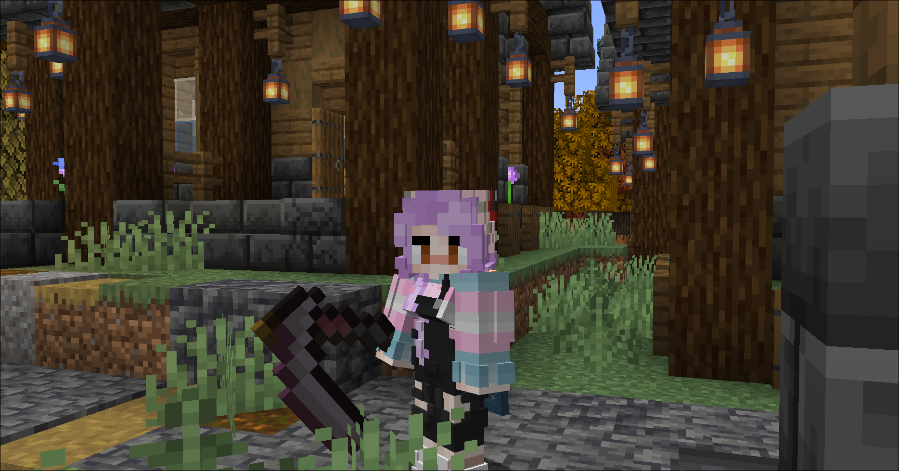
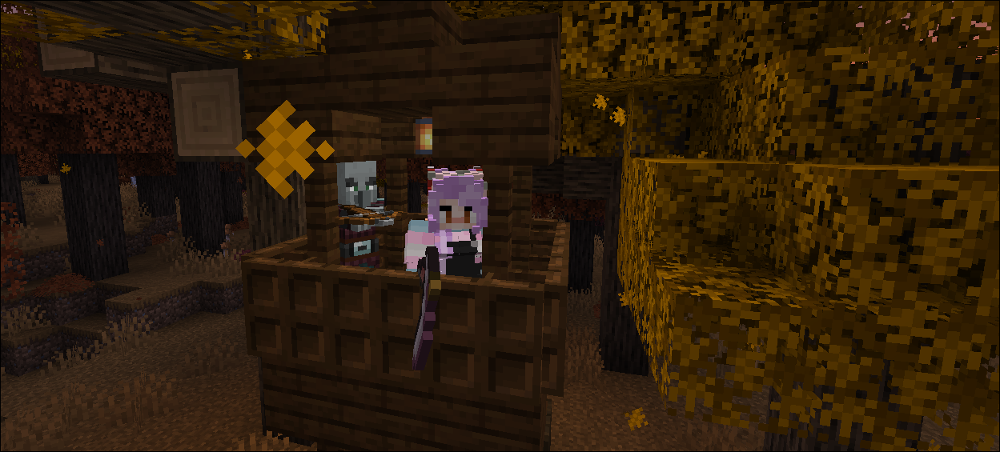

status: you stand no chance
overview:
This mod introduces new elements, including scythes, to enhance your Minecraft experience. The new weapons, such as scythes, are crafted to blend seamlessly with the traditional Minecraft gameplay. The scythes bring a fresh dynamic to the game, providing not only a new aesthetic but also unique gameplay mechanics that integrate smoothly with the traditional Minecraft experience. these scythes add a layer of depth and fun to your gameplay.
screenshots:


compatibility:
compatible with minecraft versions 1.19.2 and above.
also works with better combat mod on older versions.
this mod is under the CC0-1.0 license. feel free to use and modify it :3